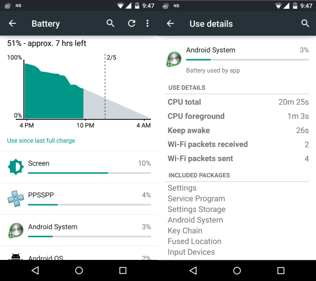

EneryLens+
Understand smart home power consumption via ambient data
Introduction
Power is an expensive commodity and keeping it in check is the best way to prevent overuse. While homes have evolved to use smart meters that allow dwellers to view their consumption remotely, there still seems to room for great improvement in informing these individuals. Without the in-depth knowledge of how much energy is used by each appliance, it becomes a tedious hit-and-try process to figure out the actual culprits. Although the usual suspects may be turned off, only real data can urge one to confidently regulate personal energy consumption.
We present a tool that can provide users with a new perspective to see their power consumption with. This new scope, aims to help users reflect and change their everyday behaviour.
My Role
This research project was the soul successor of EnergyLens. My mentor and partner-in-crime through this engagement was Manaswi Saha, who was a research associate at IIIT-Delhi at the time. Our primary academic guide through the process was Amarjeet Singh and the Mobile Ubiquitous Computing group.
Interestingly enough, not only was this my first independent project, it was also my stepping stone into the land of Human-Computer Interaction and Ubiquitous Computing. Both of these are areas that I'm extensively working in today.

I was also responsible for implementing the visualisation on the foreground section of the application. We used simple graphs to help users reflect on their quantified self.
The Motivation
One could consider this project as an investigation into understanding an individual's personal energy footprint and trying to quantify it as actionable information. But why is this an interesting endeavour? Well for one, we know that prior work shows, that providing feedback to users about their energy use can help bring about a change in their usage
Inferring human activity is of interest for various ubiquitous computing applications, particularly if it can be done using ambient information that can be collected non intrusively. We go onto explore human activity inference, in the context of energy consumption within a home, where we define an "activity" as the usage of an electrical appliance, its usage duration and its location. We primarily explore the dimension of segregating which device was used by an occupant at a particular time.

Our goal is to answer questions such as "Who is watching TV in the Dining Room and during what times?". This information is particularly important for scenarios such as the apportionment of energy use to individuals in shared settings for better understanding of occupant's energy consumption behavioral patterns.
The Prototype
EnergyLens+ is a portable energy monitoring system for smart homes at IIIT-Delhi. It records various environmental data (including light, sound and connectivity) and couples it with information acquired by interacting with an inference engine on the central IIIT-Delhi server.This data is processed and represented to the you in the form of interactive and easy to understand charts and graphs.
How it works
The app keeps collecting and uploading data to a server from the phone. This data is from the lightmeter, accelerometer, magnetometer, wifi and audio. Based on what the server already knows about the signatures of particular appliances, the new data is analysed to infer which appliance is consuming or wasting energy.
An inference engine in the cloud gauges the energy consumption and wastage of each appliance. This is based on learned patterns from the smart grid along with data sent via the phone on regular intervals. The smart grid data can help determine which appliance(s) are running. The ambient data from the phone can be used to learn which app is being used directly by the user.
The app is inbuilt with a training mode. Every appliance at the smarthome must used for training. During this sequence, the user manually annotates the appliance’s name and location. This is followed by data collection that is sent over to the server.
The server uses this data along with other data from the smart grid the homes are connected to. These are considered as features that are input to a machine learning module
What it does
The tabular navigation of the app allows the user to view the hourly wastage and consumption of energy over the last 12 hours.
The distribution of the energy between different appliances is shown in percentages. Such a split is very useful to a user trying to understand which appliances are the actual trouble makers. Moreover, each of the appliances can be clicked to go into a new screen with a greater in-depth analysis of that appliance.
Lets user view the power consumption of their home in real time. Sudden spikes and troughs in this graph will indicate the switching on/off of appliances.
Users are notified of the name and location of an appliance which is not in use but continues to consume energy.
When the user exits their home, i.e. is out of range from the WiFi Access Point they had initially registered, the app considers goes into an idle state. In this state apart from WiFi, all other data collecting background services are stopped and no data is stored. Data collection is resumed on reentering.
How it Reports
App usage stats were being recorded whenever the app is used. Recorded parameters are: which screens were used, for how long were they used and when were they used. Logging is done for all the screens.
Users received hourly validation reports with some activity data. This is in the form of “App A was used from **:** to **:*** at Loc L consumed **kWh”. The user may have chosen to report this as Correct or Incorrect. Choosing ‘Incorrect’ allows the user to report the correct values for multiple fields such as (appliance name, location name, co-occupant using it, duration of appliance running etc.)
Future
Since the system works on the basis of ambient data, wearable technology like smartwatches would be much more efficient at collecting accurate data than a phone. One reason for this is that a watch will remain on the user consistently throughout, whereas a phone can be left in different rooms.